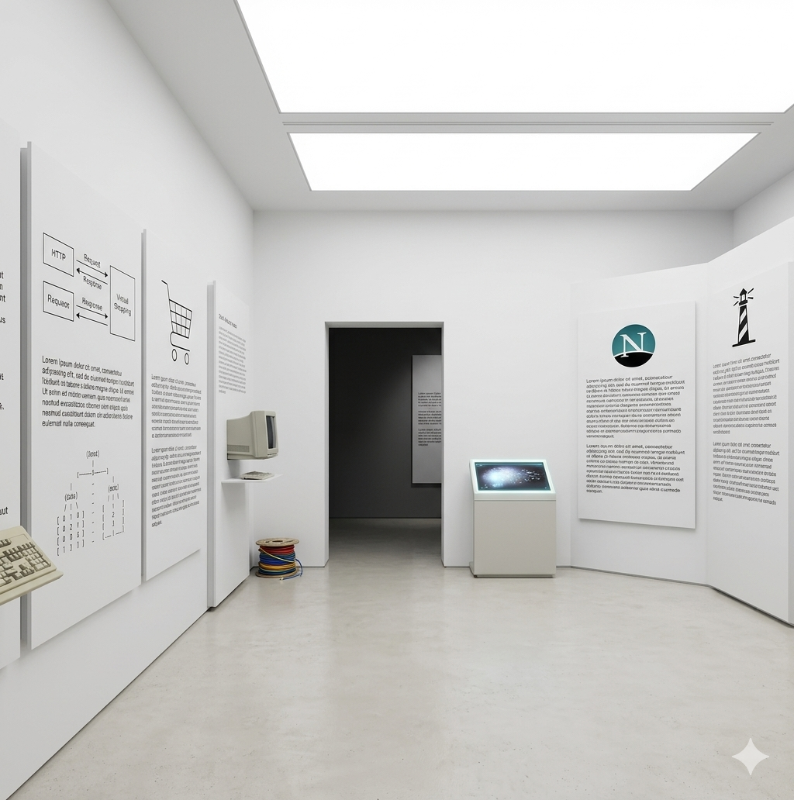
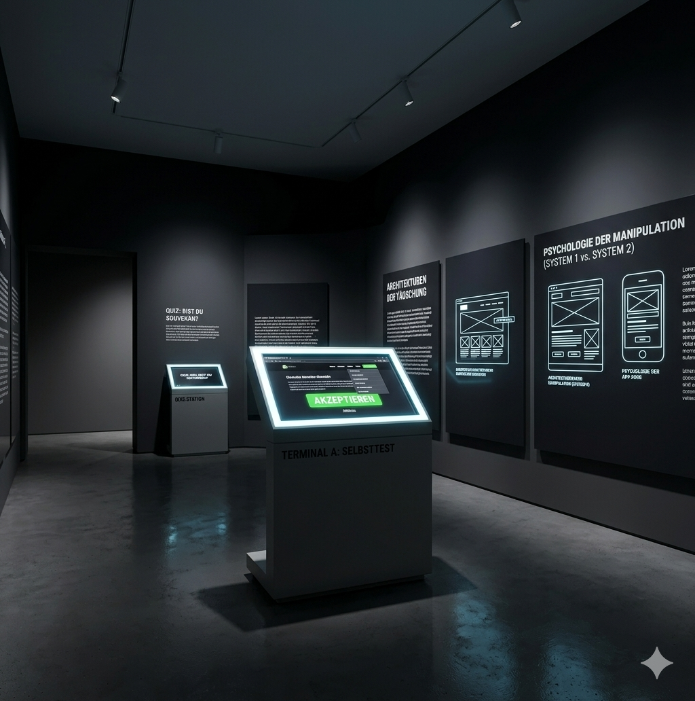

Ausstellung 2: Cookies – Vom Gedächtnis zur Überwachung
Raum 1: Das Netscape-Labor
Die Erfindung (1994)
Der Cookie wurde im Jahr 1994 vom damals 23-jährigen Web-Pionier Lou Montulli entwickelt. Montulli gehörte zu den ersten Mitarbeitern des Browser-Unternehmens Netscape. Zu diesem Zeitpunkt steckte das kommerzielle Internet noch in den Kinderschuhen. Mit seiner Erfindung in Form einer kleinen Textdatei wollte er eine fundamentale technische Hürde des damaligen Internets überwinden. Dabei konnte er nicht ahnen, welchen Einfluss dies auf das digitale Zeitalter haben würde.
Die ursprüngliche Intention: Ein Gedächtnis fürs Netz
Die Erfindung der Cookies hatte einen äußerst pragmatischen Hintergrund: Sie sollten dem Internet ein Gedächtnis verleihen. Das grundlegende Protokoll des World Wide Web (HTTP) ist nämlich von Natur aus zustandslos. Das bedeutet, dass jede Interaktion zwischen einem Webbrowser und einem Server separat betrachtet wurde. Sobald eine Seite neu geladen oder gewechselt wurde, „vergaß” der Server den Nutzer sofort wieder.
Technische Lösung und ihr Nutzen
- Was sind Cookies? Cookies sind kleine Textdateien, die vom Server auf den Geräten der Nutzer gespeichert werden. Sie haben ein Ablaufdatum und eine einzigartige ID (Unique-ID), die eine Wiedererkennung der Nutzer ermöglicht.
In diesen Cookies können kleine Mengen an Daten gespeichert werden, die dann vom Server wieder abgefragt werden können. - Der Nutzen: Durch diese Lösung wurde der elektronische Handel (E-Commerce) erst möglich. Montullis primäres Ziel war es, einen virtuellen Warenkorb zu entwickeln, der flächendeckend merkt, welche Produkte die Nutzer ausgewählt haben.

Raum 2: Kommerzielle Zweckentfremdung
Vom Warenkorb zum Überwachungsinstrument
Die ursprünglich isolierte Technologie wandelte sich schnell zu einem globalen Überwachungsinstrument. Mitte der 1990er-Jahre erkannten Werbenetzwerke wie DoubleClick, dass sich Cookies zweckentfremden ließen. Durch das Einbinden von Werbebanner-Grafiken auf fremden Webseiten konnten sogenannte Third-Party-Cookies (Cookies von Drittanbietern) platziert werden.
Von Wem kommen die Cookies?
- First-Party-Cookies: Sie werden direkt von der Webseite gesetzt, auf der sich der Nutzer gerade befindet. Sie sind nicht domainübergreifend, merken sich Warenkörbe oder Anmeldungen und gelten als weniger problematisch für den Datenschutz.
- Third-Party-Cookies: Sie dienen in der Regel kommerziellen Zwecken. Wenn eine Webseite Elemente von fremden Servern lädt (z. B. ein Werbebanner von googleadservices.com oder einen Social-Share-Button von facebook.com), sendet der fremde Server ein eigenes Cookie an deinen Browser. Die Domain des Cookies stimmt nicht mit der Adressleiste überein.
Das Cross-Site-Tracking
Da große Werbenetzwerke auf Tausenden verschiedenen Seiten aktiv sind, können sie die einzigartige ID des Nutzers plattformübergreifend wiedererkennen. Aus dem einfachen virtuellen Warenkorb wurde so ein Werkzeug, um das Surfverhalten im gesamten Netz lückenlos zu protokollieren.
Diese Datenströme fließen im Verborgenen auf Remote-Server. Dort werden verstreute Datenpunkte zu detaillierten Interessenprofilen zusammengeführt, die später im gesamten Netz für maßgeschneiderte Werbung (z. B. Retargeting) genutzt werden. Für die Nutzer entsteht ein gravierender Kontrollverlust, da sie ohne transparente Aufklärung kaum nachvollziehen können, wer ihre Daten einsehen, sammeln und teilen kann.
Terminal A: Exponat-Modul LIVE SIMULATION
Simulator: Der gläserne Surfer
Starten Sie das Experiment. Wir weisen Ihrem Browser eine eindeutige Cookie-ID zu und beobachten, wie unbemerkt Ihr Dossier im Hintergrund wächst.

🛡️ Terminal B: Wissens-Audit
Testen Sie Ihr Wissen über Cookies
Sie haben die historischen Schautafeln und das Rekonstruktions-Terminal durchquert. Prüfen Sie nun, ob Sie die technischen Meilensteine und die Hintergründe der digitalen Überwachung verstanden haben.